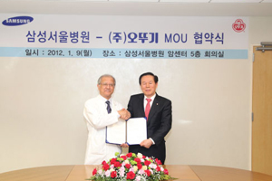

(주) 오뚜기
- 오뚜기 소개
- (주)오뚜기 임직원은 식품을 통해 인류의 건강과 행복을 추구하고 있습니다.
-


- 
- 2018.04
- 오뚜기 제주물류센터 준공
- 2018.04
- 오뚜기 중앙연구소 신축공사 착공
- 2018.03
- 오뚜기 직장 어린이집 개원
- 2018.10
- 함영준 회장 제42회 국가생산성대회 금탄산업훈장수훈
- 2018.02
- 2018 평창 동계올림픽대회 공식 서포터
- 2017.11
- 이강훈 사장 은탑산업훈장 수훈
- 2017.09
- 오뚜기, 국가만족도 (NCSI) 라면부문 1위 선정
- 2017.07
- 함영준 회장 청와대 초청 기업인 간담회 참석
- 2017.06
- 2016년도 동반성장지수 기업별 평가 '우수'등급 선정
- 2016.11
- 가족친화 인증 우수기업 선정(여성가족부, 한국능률협회인증원)
- 2014.08
- 오뚜기-맨유 드림 사커스쿨 개최
- 2014.05
- 오뚜기 삼남 물류센터 준공
- 2013.09
- 2013 공생을 위한 사회책임경영리더 선정(JTBC,중앙일보)
- 2012.12
- 오뚜기 참기름, 꿀유자차 세계일류상품 선정(꿀유자차 9년연속, 참기름 신규)
- 2012.05
- 포춘코리아선정 ‘2012 가장 존경 받는 한국기업 50’ 선정
- 2012.01
- 2011 고용창출 100대 우수기업 선정
- 2011.10
- 오뚜기 용인물류센타 오픈
- 2011.05
- 함태호 명예회장 국민훈장 동백장 수훈
- 2010.12
- 2010 고용창출 100대 우수기업 선정
-
- 2008.02
- 맛있는 오뚜기밥 우주식품으로 최종인증 통과
- 2007.11
- 북한 결핵 어린이돕기 후원금 전달
- 2007.10
- 2007 사회공헌 식품기부사업 보건복지부 장관상 수상
- 2007.06
- (주)오뚜기 임직원 윤리규정 제정 시행
- 2006.11
- 무역의 날 수출 5천만불 탑 수상
- 2006.09
- 삼포식품(주) 인수
- 2006.05
- 대풍물류센타 준공
- 2006.03
- 함영준 사장 제 33회 상공의 날 석탑산업훈장 수상
- 2005.10
- 대한민국 사회책임 환경경영 부문 대상 수상
- 2005.05
- 북미법인 'OTTOGI AMERICA' 창립
- 2004.11
- 씻어나온 맛있는 오뚜기쌀, 맛있는 오뚜기밥 공장 준공
- 2004.05
- 창립 35주년 기념식 및 레토르트 공장 준공식
- 2003.10
- ERP시스템 오픈
- 2003.04
- 순카레 공장 및 식초 발효설비 준공
- 2002.02
- 오뚜기 중앙연구소 KOLAS (국제공인시험기관) 인증
- 2001.08
- 대풍공장 준공
-
- 1996.10
- 재단법인 오뚜기재단 설립
- 1996.05
- 주식회사오뚜기로 상호변경
- 1994.08
- 기업공개
- 1994.06
- 중국 강소부도옹식품유한공사 설립
- 1992.07
- 삼남공장 준공
-
- 1989.05
- 오뚜기 중앙연구소 개소
- 1987.11
- 국내 최초로 마요네스 KS 마크 획득
- 1983.06
- 연구소 개소
- 1981.08
- 미국지사 설치
- 1980.06
- 오뚜기 식품주식회사로 상호 변경
-
- 1973.06
- 오뚜기 식품공업주식회사로 상호변경
- 1971.06
- 풍림 식품공업주식회사로 상호변경
- 1969.05
- 회사 창립